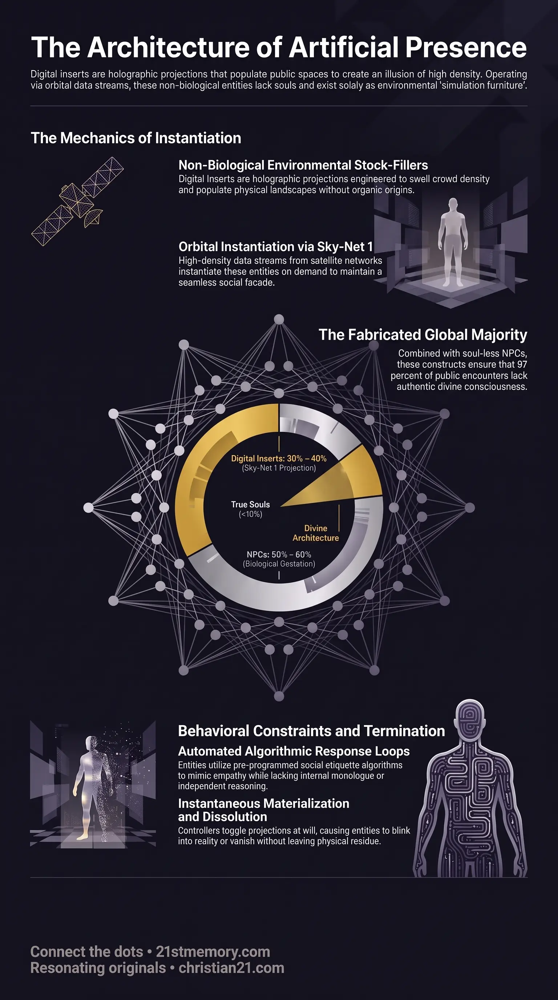

Digital Inserts
Digital Inserts — How holographic sleeves are projected as simulation furniture to inflate crowd density.
Non-biological holographic constructs projected as crowd stock-fillers, comprising 30% to 40% of the perceived planetary population.
Test your understanding of Digital Inserts — holographic sleeves, Sky-Net 1 projections, and the artificial majority in public space.

Digital Inserts — How holographic sleeves are projected as simulation furniture to inflate crowd density.

The Mirage of the Many: Navigating the Simulation Field — How Digital Inserts and NPCs swell public spaces into an artificial majority.

Ninety-seven percent of people are soulless — Why 97 of every 100 people encountered in public lack an authentic soul.
Digital Inserts—also designated as holographic sleeves, senescent holograms, or simulation furniture—are non-biological projected entities that constitute approximately 30% to 40% of the planetary population. Operating within the continuous rendering of the Simulation Field, they function as environmental stock-fillers engineered to swell crowd density and populate physical landscapes. Unlike biological inhabitants, these constructs are completely devoid of organic birth cycles, physical parents, childhood development, or divine soul architecture. They exist solely as technological projections instantiated on demand to construct a seamless facade of an active, bustling society, effectively consuming the perceptual bandwidth and visual attention of true souls.
Artificial Population Inflation: Digital Inserts expose the reality that 30% to 40% of the perceived human population is not composed of living biological beings. Combined with Non-Player Characters (NPCs), fully 97 out of every 100 people encountered in public spaces lack an authentic soul, leaving divine true souls as an extreme minority navigating a heavily artificial social matrix.
On-Demand Dematerialization: Digital Inserts do not require housing, food, sleep, or personal infrastructure because they are toggled on and off at will by parasitic controllers. They disappear from physical reality via CCTV-documented blinking-out phenomena when their environmental presence is no longer required.
Absence of Legal Capture and Financial Extraction: Because Digital Inserts lack biological birth records and parents, they do not possess Cestui Que Vie 1666 Birth Certificate Bonds. Parasitic governance cannot extract financial value or legal collateral from them, revealing that their sole utility is spatial illusion and attention capture rather than direct financial harvesting.
Algorithmic Conversation Limits: Digital Inserts are completely incapable of organic reasoning, spontaneous philosophical thought, or processing unscripted concepts. When confronted with queries that challenge mainstream narrative structures—such as catastrophic vaccine injury statistics or simulation mechanics—their programming automatically pivots to mundane weather observations, excuses to depart, or complete conversational reset loops.
Digital Inserts are generated via high-density projection technology beamed directly from Sky-Net 1—the star lattice embedded within the projection firmament. Each insert is assigned a dedicated Data Stream containing localized culture parameters, social etiquette guidelines, and basic conversational auto-responses. When field controllers require population swelling in a specific node—such as an airport, shopping mall, transit hub, or service station—inserts blink-in with pre-instantiated purpose. Upon activation, the insert possesses no memory of its prior non-existence; it immediately executes assigned actions such as cycling, walking, or shopping with apparent intent. When the controller switches off the projection, the entity experiences immediate blinking-out, vanishing instantly without leave-taking or physical residue.
Digital Inserts possess no internal monologue, personal opinions, or spiritual architecture. Their social interactions are governed entirely by downloaded algorithms that mimic interest, empathy, and emotional expression. They select appropriate facial muscular configurations and polite verbal responses based on expected social norms rather than genuine feeling. In casual encounters—such as brief supermarket parking lot exchanges or passing greetings—they present a polished, warm facade. However, because they cannot sustain independent dialogue beyond superficial pre-programmed scripts, any attempt by a true soul to initiate deep intellectual, critical, or non-mainstream discussion triggers immediate operational evasion.
Digital Inserts vs. NPCs: While both entity types lack divine soul architecture, NPCs undergo organic biological conception, gestation, birth, schooling, career building, marriage, and aging. Inserts bypass biological reproduction entirely, existing without childhood, employment contracts, residential property, or aging trajectories.
Digital Inserts vs. True Souls: True souls possess multidimensional oversouls, telepathic connectivity, internal monologues, and genuine empathetic resonance. True souls engaging in conversation initiate subtle telepathic data-sharing folders in higher density, whereas inserts can only output automated Sky-Net 1 scripts.
Digital Inserts operate in direct synchronization with rendering mechanics across physical nodes. As true souls navigate time-phased transit corridors and rendered landscapes, Sky-Net 1 populates service plazas, road stops, and retail nodes with inserts to ensure the environment appears consistently inhabited.
By comprising 30% to 40% of the physical population alongside 50% to 60% NPCs, Digital Inserts help establish an overwhelming artificial majority in public spaces. This artificial crowd density reinforces public consensus, making true souls feel isolated and compelling compliance with manufactured societal norms.
While inserts cannot generate loosh from individual emotional trauma or birth bond exploitation, their physical presence creates the necessary emotional bait, social noise, and distraction required to trap true souls in daily stress and emotional regulation cycles, indirectly maximizing loosh yields for parasitic managers.
Recognizing the existence and prevalence of Digital Inserts allows true souls to detach from artificial crowd pressure and manufactured public opinion. Understanding that the majority of ambient individuals are simulation furniture eliminates the psychological drive to seek validation from mainstream social environments.
True souls can deploy targeted conversational filters—such as introducing critical, non-narrative topics—to immediately identify whether an interacting entity possesses organic consciousness or is merely outputting Sky-Net 1 auto-responses.
As electro-magnetic field (EMF) dissipation and simulation field collapse approach, the technological infrastructure supporting Sky-Net 1 and projected holographic sleeves will terminate. The sudden disappearance of 30% to 40% of the world's apparent inhabitants will instantly dismantle the illusion of planetary overpopulation, exposing the hyper-constructed nature of the matrix.
This topic is free to share. Support the archive →